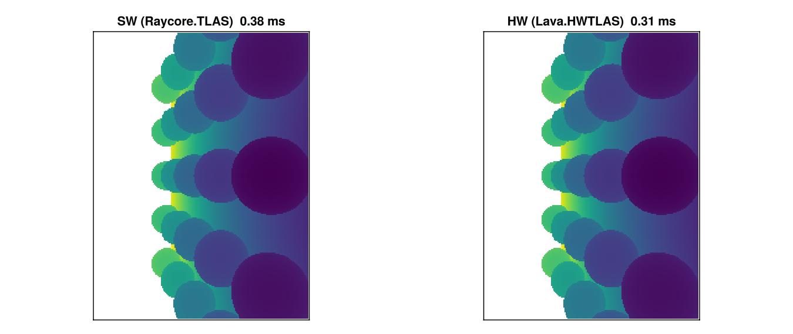

Hardware Ray Tracing with Lava
Modern GPUs include dedicated ray tracing hardware (RT cores on NVIDIA, Ray Accelerators on AMD) that can traverse BVH structures and test ray-triangle intersections in fixed-function silicon. This tutorial shows how to use hardware acceleration with Raycore via the Lava.jl Vulkan backend.
The demo builds the same scene twice — once into a software Raycore.TLAS, once into a hardware Lava.HWTLAS — traces primary camera rays through both, and verifies the depth buffers agree.
When to pick Raycore.TLAS vs. Lava.HWTLAS
| Aspect | Raycore.TLAS | Lava.HWTLAS |
|---|---|---|
| Backend | any KA backend (CUDA, AMDGPU, Metal, Lava) | Lava + Vulkan RT only |
| BVH | software (BVH4 / instanced BVH) | VkAccelerationStructureKHR |
| Closest-hit kernel | KA @kernel, in-line Raycore.closest_hit(bvh, ray) | vkCmdTraceRaysKHR over a ray batch |
| Dispatch overhead | low, KA launch | very low, pre-baked SBT |
| Use when | portability / non-Vulkan backend / no RT hardware | max perf on Vulkan RT hardware |
Both types satisfy Raycore.AbstractAccel — push!, delete!, update_transform!, sync!, n_instances, n_geometries, wait_for_gpu! work identically. The HW path uses a batched dispatch (Lava.trace_closest_hits!) instead of a per-thread closest_hit call inside a KA kernel.
When Hardware RT Helps
Hardware RT gives the biggest speedups on scenes with:
- High triangle counts — RT cores traverse the BVH in fixed-function hardware
- Complex occlusion — interior scenes, overlapping geometry, more traversal steps per ray
- Simple shading — when BVH traversal dominates, not material evaluation
For trivial scenes the software BVH already runs at GPU memory bandwidth, so the win is modest. The demo below uses ~48k triangles which is enough to see HW pull ahead but small enough to fit in a tutorial.
Hardware RT requires a Vulkan-capable GPU with VK_KHR_ray_tracing_pipeline. NVIDIA RTX (Turing+), AMD RDNA 2+, and Intel Arc all support it.
Setup
using Raycore, GeometryBasics, LinearAlgebra
using Lava
using WGLMakie
using Adapt
import KernelAbstractions as KA
using KernelAbstractions: @kernel, @index, @Const
device = Lava.LavaBackend()Lava backend active — Vulkan device with RT support.
LavaBackend is a KernelAbstractions backend that compiles @kernel code through Lava's SPIR-V compiler. It's also the device that owns Vulkan acceleration structures, so SW and HW share the same GPU context.
Building a scene twice — software and hardware
Build a small scene of tessellated spheres on a floor — enough triangles for the BVH traversal cost to matter. Both Raycore.TLAS and Lava.HWTLAS ingest plain GeometryBasics.Mesh objects through push!, so the same meshes go into both.
function build_meshes()
floor = GeometryBasics.normal_mesh(Rect3f(Vec3f(-3, -3, -0.01), Vec3f(6, 6, 0.01)))
sphere_centers = Point3f[]
for i in -2:2, j in -2:2
push!(sphere_centers, Point3f(Float32(i)*0.9f0, Float32(j)*0.9f0, 0.4f0))
end
spheres = [GeometryBasics.normal_mesh(Tesselation(Sphere(c, 0.3f0), 32))
for c in sphere_centers]
return [floor; spheres]
end
all_meshes = build_meshes()
total_tris = sum(length(GeometryBasics.faces(m)) for m in all_meshes)
sw_tlas = Raycore.TLAS(device)
hwtlas = Lava.HWTLAS(device)
for (i, m) in enumerate(all_meshes)
push!(sw_tlas, m)
push!(hwtlas, m; instance_id=UInt32(i))
end
Raycore.sync!(sw_tlas)
Raycore.sync!(hwtlas)Scene built
| meshes | instances | triangles | |
|---|---|---|---|
Raycore.TLAS | 26 | 26 | 48 062 |
Lava.HWTLAS | 26 | 26 | 48 062 |
sync! uploads the meshes and builds the acceleration structures. For Raycore.TLAS that means GPU LBVH builds (one BLAS per mesh + a TLAS over instances). For Lava.HWTLAS it means vkCmdBuildAccelerationStructuresKHR calls plus instance-table allocation.
Tracing primary rays both ways
Generate one camera ray per pixel. The SW path uses Raycore.Ray (origin + direction), the HW path uses Raycore.RTRay (origin + dir + tmin/tmax, 32-byte struct that matches Vulkan's VkRayTracingShaderRecordKHR layout).
const W, H = 256, 192
cam_pos = Point3f(0, -3.5, 1.6)
cam_target = Point3f(0, 0, 0.3)
cam_up = Point3f(0, 0, 1)
forward = normalize(cam_target - cam_pos)
right = normalize(cross(forward, cam_up))
up = cross(right, forward)
aspect = Float32(W / H)
focal = 1.0f0 / tan(deg2rad(45.0f0 / 2))
function build_rays(W, H, cam_pos, forward, right, up, aspect, focal)
rays_sw = Vector{Raycore.Ray}(undef, W*H)
rays_hw = Vector{Raycore.RTRay}(undef, W*H)
for y in 1:H, x in 1:W
u = (2.0f0 * (Float32(x) - 0.5f0) / Float32(W) - 1.0f0)
v = (1.0f0 - 2.0f0 * (Float32(y) - 0.5f0) / Float32(H))
d = normalize(forward * focal + right * (u * aspect) + up * v)
i = (y - 1) * W + x
rays_sw[i] = Raycore.Ray(o=cam_pos, d=Vec3f(d))
rays_hw[i] = Raycore.RTRay(cam_pos[1], cam_pos[2], cam_pos[3], 0f0,
d[1], d[2], d[3], 1f3)
end
rays_sw, rays_hw
end
rays_sw, rays_hw = build_rays(W, H, cam_pos, forward, right, up, aspect, focal)
# ---- SW path: KA kernel calls Raycore.closest_hit per pixel
@kernel function depth_kernel_sw!(depth, @Const(bvh), @Const(rays))
i = @index(Global, Linear)
@inbounds if i <= length(rays)
ray = rays[i]
hit_found, _, dist, _, _ = Raycore.closest_hit(bvh, ray)
depth[i] = hit_found ? dist : -1f0
end
end
sw_static = Adapt.adapt(device, sw_tlas) # StaticTLAS for kernels
rays_sw_gpu = Lava.LavaArray(rays_sw)
depth_sw_gpu = Lava.LavaArray(zeros(Float32, W*H))
sw_kernel = depth_kernel_sw!(device, 64)
sw_kernel(depth_sw_gpu, sw_static, rays_sw_gpu, ndrange=W*H)
KA.synchronize(device)
depth_sw = Array(depth_sw_gpu)
# ---- HW path: batched trace_closest_hits! dispatches vkCmdTraceRaysKHR
rays_hw_gpu = Lava.LavaArray(rays_hw)
hits_hw = Lava.LavaArray(fill(Raycore.RTHitResult(0,0,0,0,0,0,0,0), W*H))
Lava.trace_closest_hits!(hits_hw, rays_hw_gpu, hwtlas.hw_accel, length(rays_hw))
Raycore.wait_for_gpu!(hwtlas)
depth_hw = Float32[h.hit == UInt32(1) ? h.t : -1f0 for h in Array(hits_hw)]
# ---- Compare
hit_mask_sw = depth_sw .> 0
hit_mask_hw = depth_hw .> 0
disagree = count(hit_mask_sw .!= hit_mask_hw)
shared = hit_mask_sw .& hit_mask_hw
max_abs_diff = maximum(abs.(depth_sw[shared] .- depth_hw[shared]))Pixel-wise agreement
- hit-mask disagreement: 0 pixels out of 49 152
- max abs depth diff on shared hits: 1.29e-5
Sub-1e-4 tolerance is the expected noise floor — both paths use the same Möller–Trumbore-style intersection but with slightly different rounding (the HW path goes through Vulkan's intersection shader, the SW path through Raycore's kernel).
How the two paths line up
Software BVH (SW): Hardware RT (HW):
┌──────────────────┐ ┌──────────────────┐
│ KA @kernel │ │ Build RTRay │
│ per pixel │ │ batch │
│ │ └────────┬─────────┘
│ Raycore. │ │
│ closest_hit( │ ┌────────▼─────────┐
│ bvh, ray) │ │ trace_closest_ │
│ │ │ hits! (one │
│ writes depth[i] │ │ vkCmdTraceRays │
└──────────────────┘ │ call) │
└────────┬─────────┘
│
┌────────▼─────────┐
│ RTHitResult[] │
│ — t, prim_id, │
│ bary, ... │
└──────────────────┘In the SW path the kernel is fully programmable — anything you can write inside a @kernel function (shadow rays, multi-bounce, custom intersection) works the same way. In the HW path the traversal is fixed-function: rays go in as RTRay, hit results come out as RTHitResult. The raygen / closest-hit / miss shaders are pre-baked and dispatched as one Vulkan call per ray batch.
Visualize and time
to_disp(d) = d > 0 ? d : NaN32
img_sw = reshape(depth_sw, W, H) |> permutedims |> x -> to_disp.(x)
img_hw = reshape(depth_hw, W, H) |> permutedims |> x -> to_disp.(x)
# Warm-up + 5-shot minimum timing
function time_sw()
KA.synchronize(device)
t = @elapsed begin
sw_kernel(depth_sw_gpu, sw_static, rays_sw_gpu, ndrange=W*H)
KA.synchronize(device)
end
return t
end
function time_hw()
Raycore.wait_for_gpu!(hwtlas)
t = @elapsed begin
Lava.trace_closest_hits!(hits_hw, rays_hw_gpu, hwtlas.hw_accel, length(rays_hw))
Raycore.wait_for_gpu!(hwtlas)
end
return t
end
time_sw(); time_sw(); time_hw(); time_hw() # warm
t_sw = minimum(time_sw() for _ in 1:5)
t_hw = minimum(time_hw() for _ in 1:5)
fig = Figure(size=(900, 380))
ax1 = Axis(fig[1, 1], title="SW (Raycore.TLAS) $(round(t_sw*1000, digits=2)) ms",
aspect=DataAspect())
ax2 = Axis(fig[1, 2], title="HW (Lava.HWTLAS) $(round(t_hw*1000, digits=2)) ms",
aspect=DataAspect())
hidedecorations!(ax1); hidedecorations!(ax2)
heatmap!(ax1, img_sw, colormap=:viridis)
heatmap!(ax2, img_hw, colormap=:viridis)
fig
The two heatmaps are visually indistinguishable — the depth comparison cell above quantifies that. The timing ratio depends on triangle count, ray coherence, and GPU; the only honest way to know what your scene needs is to measure both.
Lifetime and memory management
sync!(hwtlas) owns hwtlas.static_tlas. Consumers re-read it (or call Adapt.adapt(backend, hwtlas)) per dispatch — do NOT cache across mutations.
sync! does not block the CPU. Backend-internal timeline tracking (Lava's bq.deferred_as_frees) handles the "still in flight" case when old acceleration-structure buffers are dropped. If you need a CPU-blocking drain — e.g. before tear-down or between benchmark phases — call Raycore.wait_for_gpu!(hwtlas) explicitly.
Direct HWTLAS usage
The cells above already show the full direct-API path. The minimum is:
using Raycore, Lava, GeometryBasics, LinearAlgebra
using Raycore: RTRay, RTHitResult
device = Lava.LavaBackend()
hwtlas = Lava.HWTLAS(device)
mesh = GeometryBasics.normal_mesh(Sphere(Point3f(0, 0, 2), 1.0f0))
push!(hwtlas, mesh; instance_id=UInt32(1))
Raycore.sync!(hwtlas)
rays = Lava.LavaArray([RTRay(0,0,5, 0, 0,0,-1, 1f3)])
hits = Lava.LavaArray(fill(RTHitResult(0,0,0,0,0,0,0,0), 1))
Lava.trace_closest_hits!(hits, rays, hwtlas.hw_accel, 1)
Raycore.wait_for_gpu!(hwtlas)HardwareAccel (hwtlas.hw_accel) is the lower-level handle if you need direct control of the pipeline / SBT or want to install a custom any-hit shader (Lava.set_anyhit_pipeline!).
RT shader intrinsics
If you write your own raygen / closest-hit / miss shaders in Lava, the RT intrinsics use the lava_rt_* naming convention — no accel argument since the SBT wires up the hardware automatically:
Raycore.rt_* (generic) | lava_rt_* (Lava-specific) |
|---|---|
Raycore.rt_primitive_id(accel) | lava_rt_primitive_id() |
Raycore.rt_instance_id(accel) | lava_rt_instance_id() |
Raycore.rt_instance_custom_index(accel) | lava_rt_instance_custom_index() |
Raycore.rt_launch_id_x(accel) | lava_rt_launch_id_x() |
Raycore.rt_trace_ray!(accel, ...) | lava_rt_trace_ray(...) |
Raycore.rt_ignore_intersection(accel) | lava_rt_ignore_intersection() |
Raycore.rt_payload_store!(accel, val, slot) | lava_rt_payload_store_f32_at(val, slot) |
Raycore.rt_payload_load(accel, slot) | lava_rt_payload_load_f32_at(slot) |
The pre-baked shaders shipped with Lava.HardwareAccel (raygen / closest-hit / miss for RTHitResult payload) are defined in Lava/src/raytracing/raycore_compat.jl as a reference implementation.